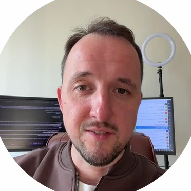
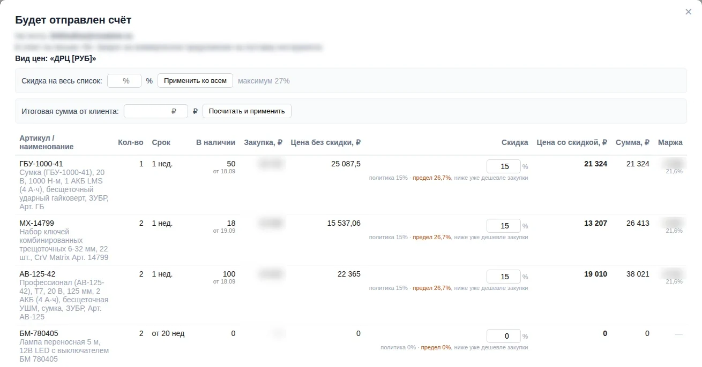
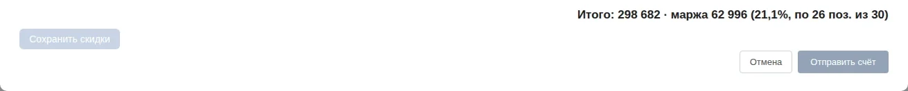

ИИ для своего бизнеса. Практикум Алексея Кухникова
Разберём твою задачу. Начнём решать её с ИИ.
Практикум для собственников: работа с материалами твоей компании, первый проверяемый результат и четыре недели групповых разборов со мной.
До 10 участниковочный день100 000 ₽

Понимаешь, что ИИ нужен. Но до своей задачи всё не доходит.
- Непонятно, с какой задачи начать, чтобы был толк.
- Регистрации и настройки отталкивают раньше, чем появляется польза.
- После вдохновляющей встречи возвращаются текущие дела.
Поэтому начнём с одной твоей задачи и пройдём путь до результата вместе.
Пример из моей компании · используется в работе
Клиент прислал письмо на 30 позиций. Перед менеджером готовый счёт.
Задача: ответить на заявку счётом с ценами и наличием и не продать ниже закупки. Система разобрала письмо, нашла позиции в базе и собрала счёт. Ниже он в том виде, в каком его видит менеджер перед отправкой.


Что сделала система
- Подставила по каждой строке наличие у поставщика и срок.
- Ограничила скидку: политика компании и предел, ниже которого продажа уходит дешевле закупки.
Что проверяет человек
- Строки без наличия и без цены: что предложить клиенту вместо них.
- Счёт уходит клиенту, только когда менеджер нажмёт «Отправить счёт».
Что закрыто на снимке
Адрес клиента, закупочные цены и маржа в рублях по строкам. Остальное показано как есть.
На практикуме мы не строим такую систему за день. Ты проходишь тот же цикл на одной своей задаче: ставишь, получаешь результат, проверяешь, исправляешь.
Подробный разбор моей системы →Как устроена работа на практикуме
- Твоя задача
- работа с ИИ
- проверка
- доработка
- применение
Что останется у тебя
- Первый проверяемый результатпо одной задаче: обработанные данные, рабочий сценарий или небольшой прототип.
- Материалы и настройкисвоего задания, чтобы повторить работу без меня.
- Проверочный листгде искать ошибки и где решение за человеком.
- План на 8 недельприоритеты, ответственные, как проверить результат.
Неделя до встречи
Подготовка
Приносишь 2–3 задачи, вместе выбираем одну. Готовишь небольшие обезличенные примеры и описание хорошего результата. На онлайн-встрече до 90 минут проверяем, что всё запускается.
Подходят задачи вроде: сравнить таблицы, достать сведения из документов, собрать отчёт по набору материалов, сделать небольшой инструмент для повторяющейся операции.
Очный день · 6 часов работы
Работа над твоей задачей
Смотрим метод на моих реальных примерах. Уточняем твою задачу и решаем её в инструменте на твоих материалах. Проверяем результат, повторяем на нескольких примерах и собираем план на 8 недель.
4 недели после
Разборы в группе
Раз в неделю онлайн-встреча до 2 часов. Перед ней присылаешь, что сделал и где застрял. Между встречами нужна самостоятельная работа.
Программа очного дня по блокам
- 45 минут
- Метод на реальной работеМои примеры: исходная задача, действия, результат, ошибка и проверка.
- 45 минут
- Уточнить свою задачуВходные данные, ожидаемый результат, ограничения, способ проверки. Большую задачу сужаем до первого полезного фрагмента.
- 150 минут
- Практическая работаРаботаешь в инструменте на своих материалах. Короткие общие показы чередуются с самостоятельной работой и обратной связью.
- 75 минут
- Проверить и повторитьСравнение с ручным результатом, поиск пропусков, повтор на нескольких примерах, исправление инструкции.
- 45 минут
- Следующие шагиРезультат, первое действие после встречи, ответственный, критерий проверки и план на 8 недель.
Перерывы и обед в эти 6 часов не входят.
Что разбираем на четырёх встречах
- Неделя 1Повторяешь работу после очного дня, разбираем, что мешает применить её в реальном процессе.
- Неделя 2Повторяющиеся ошибки и качество результата; при необходимости меняем постановку.
- Неделя 3Делаем процесс повторяемым: инструкция, проверка, роль человека. Сможет ли коллега повторить.
- Неделя 4Итоги: что продолжать, что менять или остановить. Обновляем план на следующие недели.
Ориентир: кроме встречи 1–2 часа в неделю на самостоятельную практику. Материалы и вопросы к разборам идут в канал группы.
Участие
100 000 ₽
за участника · до 10 человек в группе
Дату и место ближайшей группы обсудим при знакомстве.
Обсудить участиеВходит
- Подготовительные материалы и онлайн-встреча до 90 минут
- Очный день: 6 часов работы над твоей задачей
- Четыре групповых разбора до 2 часов
- Рабочие шаблоны и проверочный лист
Оплачивается отдельно
- Подписки на ИИ и нужные сервисы: состав и сумму назову до оплаты
- Дорога и проживание
Сервер покупать не нужно. Это групповая практика, а не внедрение под ключ: разработку за участника я не веду и окупаемость не обещаю. В канале группы отвечаю на вопросы к разборам, но не круглосуточно.
Вопросы
Нужно ли уметь программировать?
Нет. Работаем в одной рабочей среде из моего курса, задачу ставим обычными словами. Нужно уметь описать свою работу и быть готовым проверять результат.
Что если моя задача большая?
До встречи уменьшаем её до первого полезного фрагмента, который реально сделать за день. Остальное попадает в план на 8 недель. Подключение к живым системам компании, например к CRM, это отдельный следующий этап.
Как быть с данными компании?
Берём небольшие обезличенные примеры. Ты работаешь в своих аккаунтах, пароли и платёжные данные мне не передаёшь. Клиентам ничего непроверенного не отправляем.
Что нужно из техники?
Рабочий ноутбук, доступ к инструменту и небольшой тестовый запуск до встречи. Вопросы по установке собираю заранее и разбираем их на подготовительной встрече.
Как оплатить?
Онлайн-оплаты на странице нет. Сначала обсуждаем твою задачу в Telegram, потом я присылаю дату, место и условия оплаты.
Напиши, какую задачу хочешь решить. Обсудим, подойдёт ли тебе практикум.
Обсудить участиеПишешь мне лично в Telegram: @alexkukhnikov